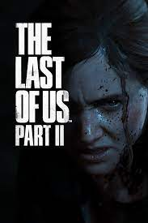

Resident Evil 4 Remake

Sobrevivência é apenas o começo. Seis anos se
passaram desde o desastre biológico em
Raccoon
City. Leon S. Kennedy, um dos sobreviventes,
segue o rastro da raptada filha
do presidente até
uma vila europeia isolada, onde há algo terrivelmente
errado com os
habitantes.
The Last Of Us Pt:2
Cinco anos depois da jornada perigosa pelos Estados
Unidos pós-pandêmico, Ellie e
Joel se estabelecem
em Jackson, Wyoming
Quando um evento violento interrompe a paz, Ellie embarca em uma jornada
implacável para fazer
justiça e encontrar uma solução